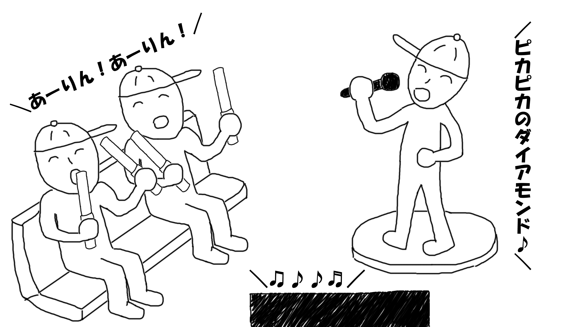

モノノフって？
- 「ももいろクローバーZ（通称：ももクロちゃん）」というアイドルのファンのこと。
- 推しメン（イチ推しのメンバー）や、住んでいる地域によって「デコノフ」「プニノフ」「ちゅらノフ」など呼び方が変わる。
- ももクロちゃんに会った人はたちまちモノノフになってしまうという伝説があるとかないとか・・・。

ももクロちゃんをカラオケで楽しむには
- 「コール」という合いの手をする。
- 「サイリウム」の色を歌っているメンバーのイメージカラーに変える。
- 「コール」をすることによって、カラオケでもライブ感を出すことができる。

コールって何？
- 曲中や、自己紹介の時にかける合いの手のこと。
- 「うりゃ！おい！」などの一般的なコールや、「かなこぉ↑↑」「あーりん！」などのメンバーの名前を呼ぶコールがある。
- 「うりゃ！」をコールする人と「おい！」をコールする人がいる。この分担が揃うことで「うりゃ！おい！」と聞こえる。

サイリウム？
- 光る棒のこと。ペンライトと言うこともある。
- ももクロちゃんの公式サイリウムは「赤」→「黄色」→「ピンク」→「緑」→「紫」の順番（それと逆順）に光る。
- ライブが始まった時は4本持っていたのに、ライブが終わるころには（疲れて）1本まで減ってることもしばしば・・・。